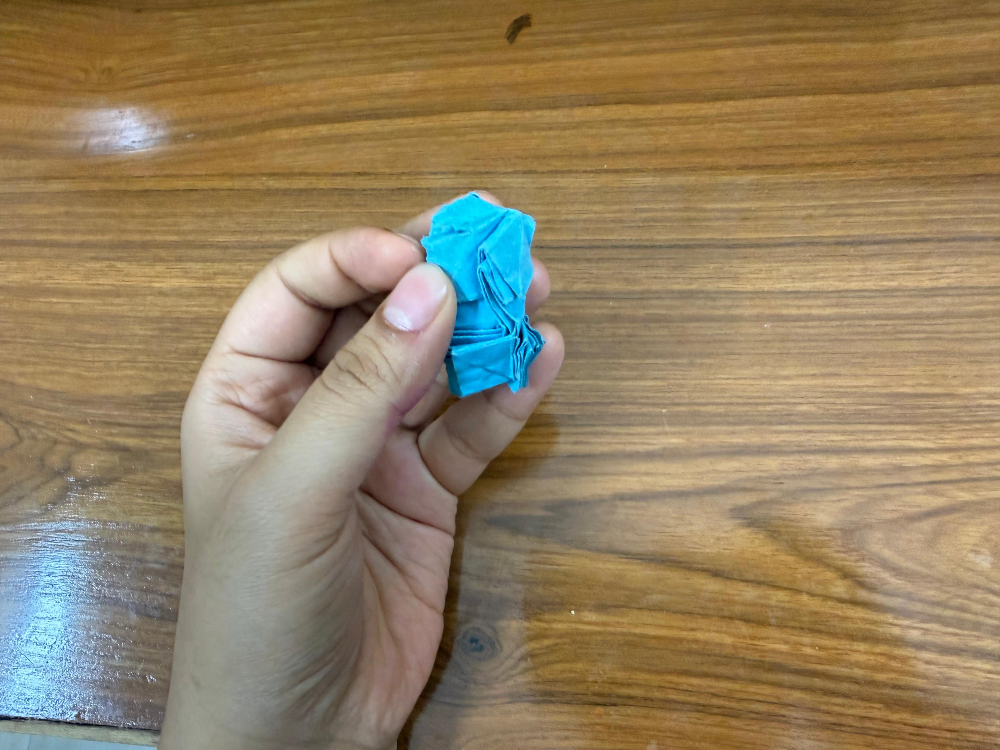
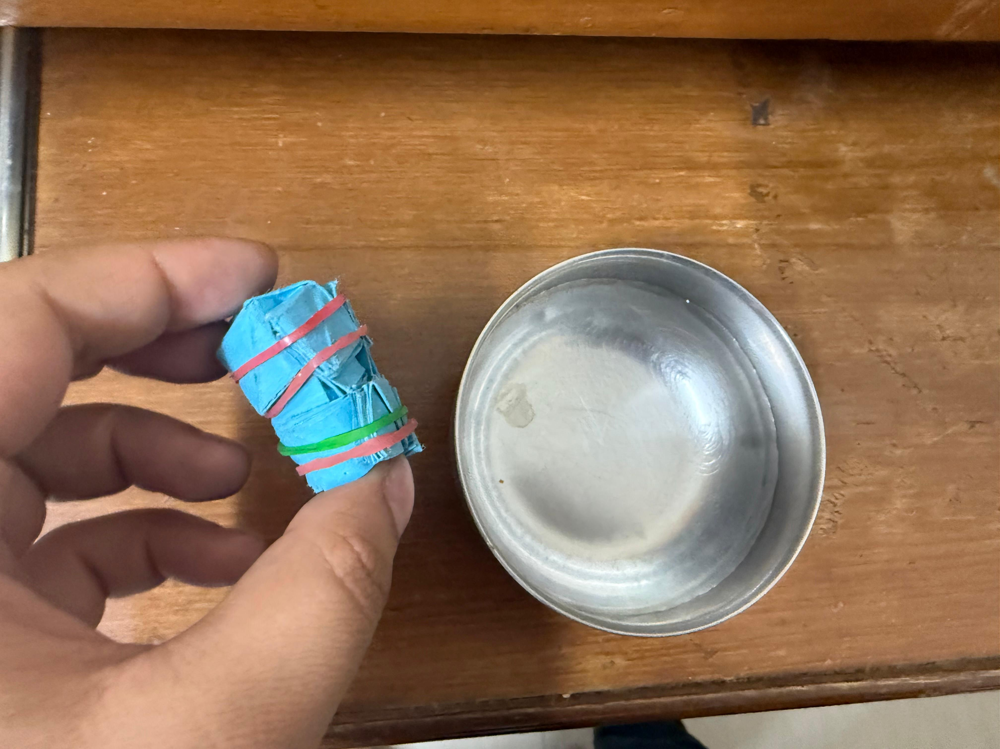

Origami
Flasher Top Hat

About This Piece
This is Jeremy Shafer’s Flasher Top Hat. I folded it by following Jeremy Shafer’s Flasher Top Hat tutorial . This was my first time wet folding a model, and it gave the hat a much better shape.
Folding Process
I took a few short videos while shaping the model.
Wet Folding
I tried wet folding for this model, which helped the paper hold its form better.
